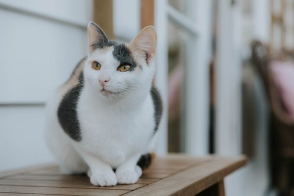

Aroha, the gentle soul with a heart as warm as the sun, graces Purrs & Beans with her presence. This white cat adorned with charming ginger spots is a delightful burst of joy in the cozy atmosphere of the cafe.
Aroha's serene nature and affectionate demeanor make her the perfect companion for those seeking tranquility and a touch of playful elegance.
You'll often find Aroha gracefully exploring nooks and crannies or lounging in the sunlit spots, inviting visitors to share in her serene moments.
Arya, the spirited calico enchantress, brings a burst of color and vivacity to Purrs & Beans. With her striking combination of black, orange, and white fur, Arya is a visual feast for cat lovers.
This young and playful feline is always on the lookout for new adventures, whether it's chasing after feather toys or engaging in spirited games of hide-and-seek.
Arya's inquisitive nature and affectionate purrs make her an irresistible companion for those seeking a lively and interactive cat cafe experience.
Bandit, the adventurous black and white cat, lives up to his name with a mischievous twinkle in his eyes. Always on the lookout for new hideouts and playful antics, Bandit is the master of stealthy paw pounces and feather toy heists.
Despite his cunning ways, this lovable rascal has stolen the hearts of everyone at Purrs & Beans. Join Bandit on a journey of fun and frolic as he adds a touch of playful rebellion to your cat cafe experience!

Banksy, the fluffy ginger tabby artist, adds a touch of warmth and creativity to the ambiance at Purrs & Beans.
With his vibrant coat and a bushy tail that rivals his artistic flair, Banksy is a masterpiece of feline charm.
Known for his love of cozy nooks and comfortable cushions, Banksy enjoys both quiet contemplation and lively play sessions with visitors. This laid-back and friendly tabby is the perfect companion for those seeking a cozy and artistic escape.
Dani, the sleek brown tabby, adds an air of sophistication to the vibrant atmosphere at Purrs & Beans. Her shiny coat and graceful movements capture the attention of visitors, making her a picture of elegance.
Dani is a curious explorer, often found perched on windowsills or investigating the latest additions to the cat cafe.
Despite her refined appearance, Dani is also a playful spirit, ready for a game of chase or a leisurely sunbath by the windows.
Gigi, the charming shorthaired ginger tabby, lights up Purrs & Beans with her radiant personality. With her soft and sleek fur in varying shades of ginger, Gigi is a true embodiment of feline grace and beauty.
Gigi loves engaging in friendly conversations, often responding with adorable chirps and gentle purrs. Her playful nature is infectious, and she's always up for a game of catnip-fueled fun or a cozy cuddle session.
Goldie, the timid calico beauty, adds a gentle and delicate presence to the serene atmosphere at Purrs & Beans.
With her patchwork coat of soft oranges, blacks, and whites, Goldie is a picture of understated elegance. Though initially shy, Goldie blossoms with patience and gentle interactions. She prefers quiet corners and enjoys the company of those who appreciate her tender nature.
In moments of trust, Goldie reveals her playful side, engaging in gentle games and delicate paw taps.
Hamburglar, the spirited tortoiseshell adventurer, brings a whirlwind of energy to Purrs & Beans. Her unique coat of rich browns, oranges, and blacks mirrors the complexity of her playful character.
Hamburglar is always on the lookout for excitement, whether it's scaling cat trees or pouncing on feathered toys.
Despite her mischievous antics, she's a social butterfly, eager to charm visitors with her quirky charm and affectionate purrs.
Lady Mary, the regal white beauty, graces Purrs & Beans with an air of aristocratic charm. Her pristine, snowy coat and elegant posture make her a true feline aristocrat, capturing the attention of every visitor.
Lady Mary is a dignified presence, often found perched on high vantage points, surveying her kingdom. Despite her noble demeanor, she's not above enjoying a good chin scratch or engaging in a refined game of feathered toys.
Mango, the confident ginger tabby, injects a burst of energy and self-assured charm into the vibrant atmosphere at Purrs & Beans.
His sleek fur, ablaze with shades of golden orange, matches the boldness of his spirited personality. Mango is the ultimate extrovert, fearlessly approaching visitors with a confident swagger and a charming gaze.
A natural leader in feline play, Mango is always up for an adventure, whether it's chasing toys or basking in the attention of adoring fans.
Miss Molly, the endearing cross-eyed tabby, brings a whimsical charm and a touch of sweetness to Purrs & Beans.
Her unique gaze adds an extra layer of adorable to her already captivating tabby markings. Miss Molly is the epitome of coziness, with a penchant for finding the softest spots for a luxurious nap.
Despite her quirky appearance, she's a social butterfly, always ready to share her warmth through gentle purrs and delightful snuggles.
Tonks, the dapper tuxedo cat, graces Purrs & Beans with an air of sophistication and playful charm. His sleek black and white coat, resembling a formal suit, adds an extra touch of elegance to his already refined demeanor.
Tonks is a socialite, effortlessly gliding between visitors, offering friendly headbutts and charming everyone with his stylish presence.
As a skilled entertainer, Tonks enjoys engaging in interactive play and may even showcase his acrobatic prowess during your visit.
Woody, the classic tabby gentleman, brings a timeless charm to Purrs & Beans with his distinctive markings and dignified demeanor.
His coat, adorned with swirls and stripes, reflects the timeless beauty of traditional tabby patterns. Woody is a laid-back and easygoing feline, often found lounging in cozy corners and observing the hustle and bustle of the cafe.
While he may appear reserved at first, Woody is a true friend to those who appreciate his calm and gentle nature, always ready for a quiet moment of companionship.
Zuzu, the playful tortoiseshell dynamo, infuses Purrs & Beans with boundless energy and spirited fun. Her coat, a kaleidoscope of rich browns, oranges, and blacks, reflects the vivacity of her lively personality.
Zuzu is the life of the party, initiating games of chase, feather toy extravaganzas, and acrobatic displays that never fail to entertain.
Despite her spirited nature, Zuzu is also a loving companion, showering visitors with affectionate headbutts and charming purrs.